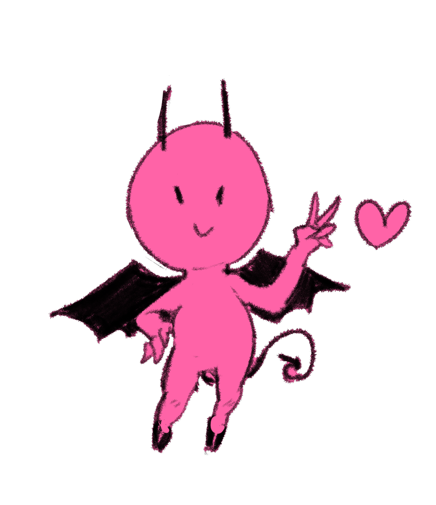

Oi! Tudo bem?
Eu me chamo Tiago, tenho 17 anos e sou estudante do Técnico em Informática no IFSP - Campus Bragança Paulista.
Sou uma pessoa que gosta de pensar muito sobre temas que não vão ter nenhum impacto prático na minha vida e
que adora gráficos na matemática - você já viu a maravilha das funções trigonométricas em um gráfico? Pois é.
Adoro arte no geral - literatura, cinema, música, etc. E meu principal hobby no momento é desenhar
(a imagem no site foi desenhada por mim )
Por que você só usa preto?
Eu só acho uma cor bem bonita mesmo. Adoro coisas em escala de cinza.
Mas te digo que não é uma boa ideia usar roupas pretas e morar com dois gatos.
Você é roqueiro?
Apesar de eu usar só preto e camisas com caveiras e coisas estranhas eu não escuto só rock!
Na verdade meu gosto musical não é bem definido, depende do dia e do meu humor.
Mas sim, eu escuto rock - principalmente uns beeem pesados e ruídosos.
Que banda você mais gosta?
Wooosh, é uma pergunta díficil. Uma das minhas favoritas é a banda mineira Lupe de Lupe,
mas a que eu tô escutando mais no momento se chama Deftones - uma banda de new metal.
Você quer se formar em que área?
No momento, eu quero fazer bacharelado em física pela USP. Algum dia no futuro quero trabalhar
com pesquisas em laboratórios e observatórios e, quem sabe, até dar aula (isso num futuro distante).
O que te leva a gostar de matemática? Você é maluco?
Muito provavelmente sim! Mas acho a matemática quase poética em certos momentos, a maneira que ela como linguagem
traduz o infinito é bem legal de se pensar.